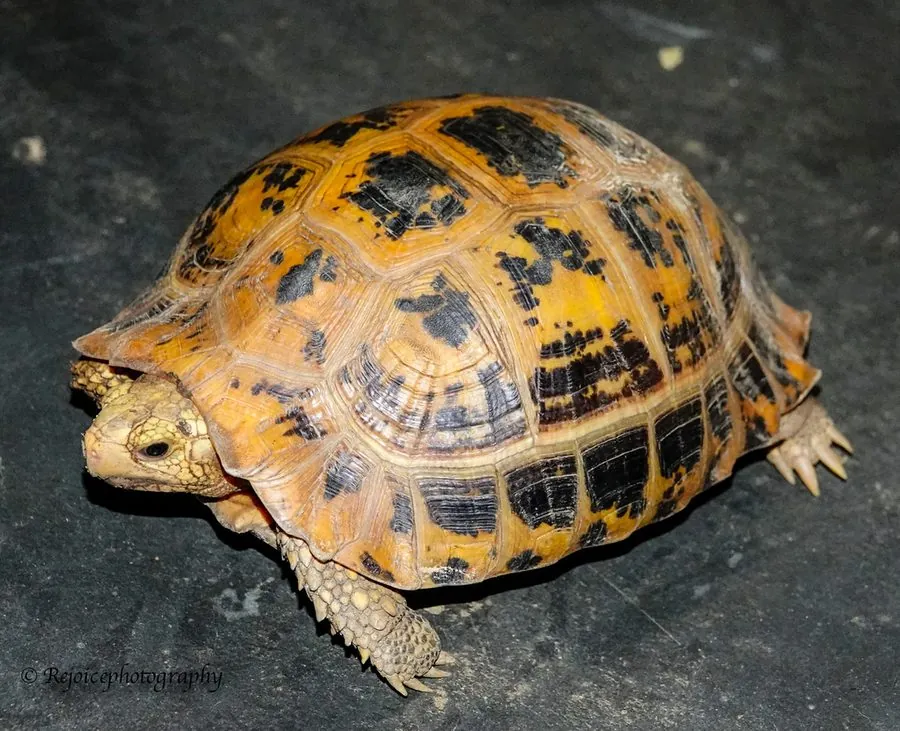

爬行动物 · 动物界
缅甸陆龟 Indotestudo elongata

南亚与东南亚的中型陆龟，背甲狭长、头部呈黄色，因宠物贸易和食用被大量捕捉，属极危物种，属于珍稀龟类。
- 分类
- 门脊索动物门纲爬行纲目龟鳖目科陆龟科属长颈陆龟属
- 栖息环境
- 南亚与东南亚湿润的森林、灌丛、农田边缘与林下落叶层
- 地理分布
- 印度东北部、缅甸、泰国、越南、马来西亚等东南亚国家
- 保护级别
- IUCN 极危（CR）；中国国家一级保护动物；CITES 附录 II
物种志
缅甸陆龟背甲长 20–30 厘米，背甲狭长而高隆，呈黄褐或淡黄色，盾片上有深色斑纹或生长纹；头部呈黄色或淡黄色，四肢粗壮，前肢有较大的鳞片，尾部短小。它的外形在陆龟中较容易辨认。
它分布于印度东北部、缅甸、泰国、越南、马来西亚等南亚和东南亚地区，栖息于湿润的森林、灌丛和农田边缘，以植物、果实、蘑菇和腐肉为食，多在清晨和傍晚活动。每年繁殖季雌龟在沙土中产卵 3–8 枚，孵化期约 3 个月。由于被大量捕捉用于宠物贸易和食用，加上森林砍伐，野生缅甸陆龟数量急剧下降，被列为极危物种；在中国它被列为国家一级保护动物，禁止非法捕捉和买卖。
形态与习性
- 食性植物、果实、蘑菇和腐肉
- 体长背甲长 20–30 cm
- 体重约 2–5 kg
- 寿命约 40–60 年
- 繁殖卵生，3–8 枚，孵化约 3 个月
趣味知识
- 缅甸陆龟头部呈黄色，背甲狭长，是它最明显的识别特征。
- 它因宠物贸易和食用被大量捕捉，野外数量急剧下降，属极危物种。
- 在中国，缅甸陆龟被列为国家一级保护动物，禁止非法买卖。